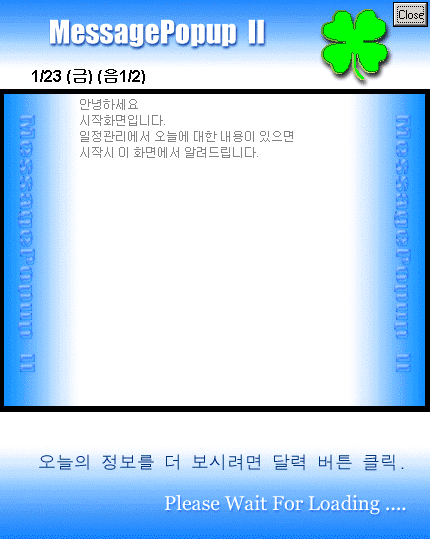
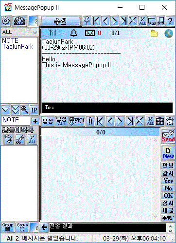
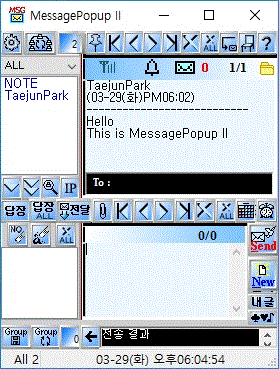
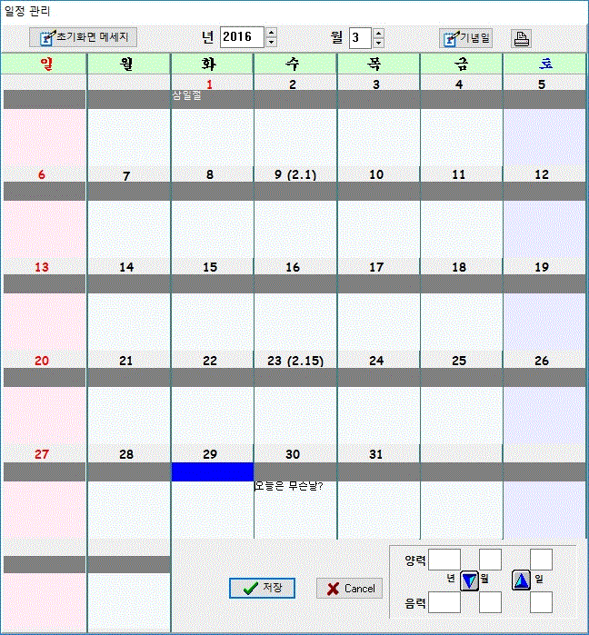

MessagePopup II (메세지팝업 II) [Freeware] ( Since 10/24/2001)
최신 버젼 4.0.2
타 자료실에서 받은 자료는 아마도 최신 자료가 아닐 겁니다. 여기서 다운받아 사용하세요
랜상에서 메시지를 주고받는 Instant LAN Messanger입니다.
인터넷 메신져와 인터페이스가 다르며, 메세지팝업만의 인터페이스로 통신을 합니다.
인터넷 메신져는 채팅 위주의 프로그램이지만, 메세지팝업은 업무적 활용을 주 목적으로 합니다.
또한, 로그인 절차없이 설치만으로 사용가능 합니다. 허브(랜)만 있으면 통신가능. 인터넷상의 사용자와 통신불가
컴퓨터를 사용하는 사람은 누구든지 무료로 이용가능합니다.
회사이건 관공서이건 집이건 어디서건 무료로 사용가능합니다.
단, 이 프로그램을 이용해서 상업적으로 판매나 프로그램을 임의로 수정할 수 없습니다.
(상업적 회사 내에서 사용하는건 당연히 무료입니다.)
[HW 요구사항]
OS: Windows 95/98/Me/2000/XP/Vista/7/8/10
LAN card : TCP/IP protocol installed, 동적 IP를 사용할 수 없습니다. 동적 IP 라면 DHCP 서버에 static IP로 설정하세요
Display : 최소800 X 600, (1024 X 768이상 권장)
[메인 아이콘] 타 자료실 등록용
[초기실행 화면]

[메인 창]

[축소화면]

[최소 아이콘화] 시스템 트레이 아이콘 오른클릭후 선택하면
아래 창을 바탕화면 아무고에 갖다 놓고, 메시지가 오면 깜박거립니다.
[다이어리]
음력 , 양력 변환기
